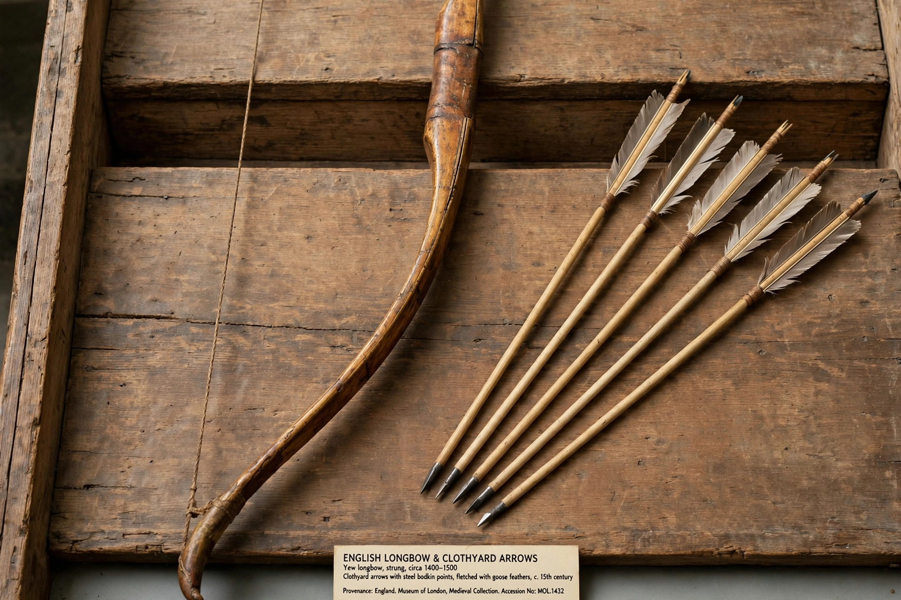

The English longbow was a powerful medieval longbow, about 6 ft (1.8 m) long, used by the English and Welsh for hunting and warfare. Although the weapon had earlier Welsh associations, it was the English crown that systematised its use, requiring regular archery practice by law. Longbowmen formed the backbone of English armies during the Hundred Years' War, winning famous victories at Crécy (1346), Poitiers (1356) and Agincourt (1415).
 | |
| Type | Longbow |
|---|---|
| Place of origin | Wales / England |
| Used | c. 13th – 16th centuries |
| Draw weight | Commonly 80–150 lbf (war bows higher) |
| Effective range | c. 200–300 yd (180–270 m) |
The classic longbow was a self bow made from a single stave of yew, combining pale sapwood (resistant to tension) on the back with darker heartwood (resistant to compression) on the belly. Arrows — the "clothyard shaft" — were about 30 inches long, fletched with goose feathers and fitted with bodkin or broadhead points.
A trained archer could loose 10–12 arrows a minute. Massed volleys could wound horses, disrupt charges and, at close range, penetrate mail and some plate. English tactics typically combined dismounted men-at-arms with wings of archers behind stakes, as at Agincourt. Laws such as the Archery Act of 1511 tried to preserve the skill, but the longbow faded from warfare in the later 16th century as firearms improved — the bows recovered from the wreck of the Mary Rose (sunk 1545) are among the finest surviving examples.
From Wikipedia, the free encyclopedia.